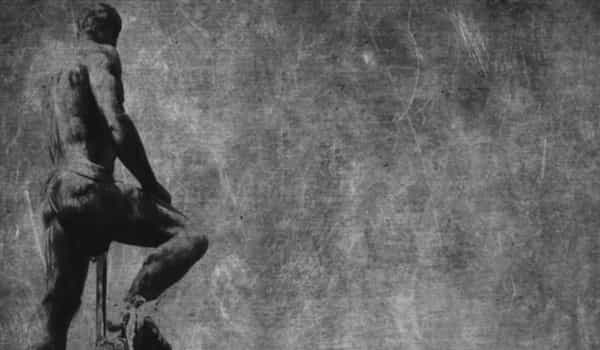
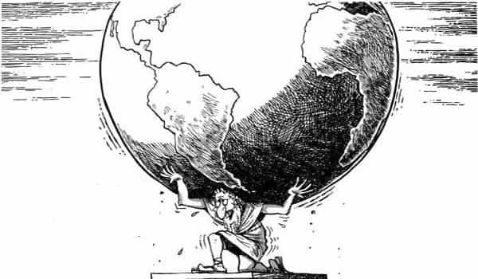
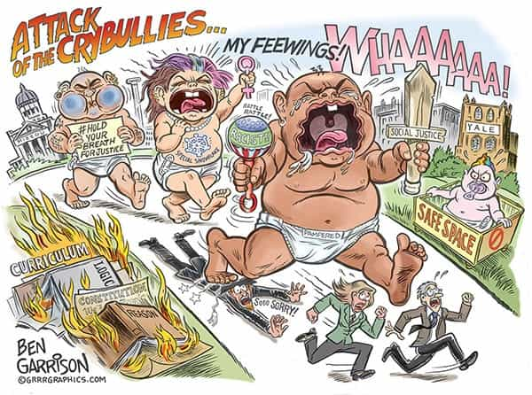
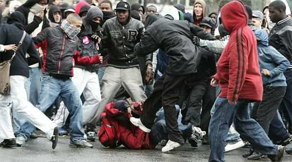
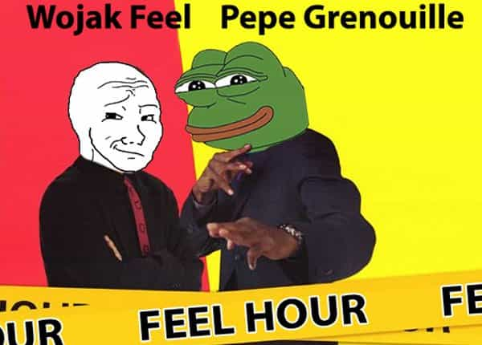

André is a young European who left his decaying country in 2012 for greener pastures. He enjoys exploring subterranean places, reading about a host of interconnected topics, and yearns for Tradition.


When one writes such a word as “victimhood,” what do you think about? If you are red-pilled enough, you must already be aware that it means something overused and stemming from hostile intentions. We are all too familiar with the muh-past-sufferings and muh-present-sufferings narratives pushed down by these organized groups the mainstream dignifies under the name of “minorities.”
Victimhood in general means having part of one’s identity, through one’s real or purported history, tied to past or present undeserved sufferings. We should distinguish between felt victimhood, which pretty much everyone can harbor, and acknowledged or institutionalized victimhood which carries a variety of benefits, such as public commemorations, homage paid by other groups or people, funding, a place in the media and most institutions, moral authority and public empathy.
Such advantages flow from what we can call a victimhood economy, where the group whose sufferings are the most dignified or acknowledged enjoys the greatest share of the market and consequent advantages—exactly as the bigger shareholders of a company will enjoy the biggest dividends.
An intermediary form of victimhood would be one that exists inside a specific group, but has a hard time to get recognition outside. Such a form of victimhood can be kind of frustrating, as the unrecognized will perceive it as a lack of empathy whereas the other will likely mock it, but it also carries on various advantages, be it only the motivation that can flow from anger and quitting a dangerous state of naiveté to a fitter state of, at least, vigilance.

Here I would like to advocate for the idea that, yes, there can be a healthy and a fit victimhood. There are pitfalls to avoid, such as tying too much of one’s identity to past sufferings and living in a state of perpetual trauma, or complaining instead of taking action. Yet, victimhood can also be an asset, especially if it is dominated by a higher awareness instead of dominating said awareness.
Just look at the Jews, who are well-represented at the Ivy League universities, in Hollywood, or almost everywhere there is money to be taken, have politicians kowtowing to them in most Western countries, yet still maintain a fierce communautarian attitude—not to say tribalistic—at the same time than they enjoy a moral authority thanks to what Norman Finkelstein called the Holocaust Industry. Their example shows that enjoying the greater share of the victimhood market can be paired with being, not losers, but the most powerful tribe on Earth.
As I am typing these lines down, I am intimately conscious of the bad reputation victimhood has among our circles. This is normal and natural, for it has been constantly used as a ploy against the dispossessed majority a lot of us hail from. But look at it from another angle: the left does not want us to have any victimhood. There is a big victimhood marketplace out there, and every group or identity acknowledged by the Liberal hegemony has an implicit right to present itself there as having (undeservedly) suffered a lot and still suffering.
The left helped such groups to constitute, i.e. led individuals of particular categories to identify their category as a class and their class as a community of interest competing with others. This has been true with so-called Black identity and with feminism. Both movements are identitarianisms in the sense that they are a separatism based on a feeling of group identity where there was none before, and both have been heavily funded and led by Jews.
On the opposite side, the same left that has been so busy crafting and grievance-mongering so-called “minority” groups has also been very active to deny us any right to victimhood, let alone a dignified identity. We are supposed to be responsible of everything and just exist so we can pay for everyone else. In The Current Year, we can’t have the least piece of the victimhood cake, which is not so incidentally all funded by the Evil White Male through taxes and “redistribution.” This makes sense, given that the victimhood market does not create any wealth per se but piggybacks on those who create it.
Feminists have notoriously killed the nice guy by denying him any right to victimhood, that is, by denying that he had suffered unfairly and consequently had a right to acknowledgement and empathy as a nice guy. In the same way, the left has been busy to paint our identities on a very negative light, insisting that our ancestors had been exploiting everyone else without actually producing anything themselves, and thus making our very identities void of dignity, undeserving, tainted by the “privilege” of having had virtuous and able ancestors.
If we succeed at life, we have no merit because it’s all “white privilege,” and if we fail, we are “failures” and “losers” who cannot even succeed even whereas “privileged.” In said case, it goes evidently—and implicitly—that we should await death in silence, given that we have purportedly no right to public acknowledgement and empathy. In both cases, the idea that we have a “privilege” is a powerful mean to always cast us negatively, no matter what we actually do.
This is how the same left that rants about “white privilege” can also admit that the white working class is actually disenfranchised and even rejoice about its planned death: though these positions are inconsistent logically, they are consistent emotionally as they maintain a negative and stained view of whites in general, no matter our actual situation, no matter what we do.
Facing the giant dishonesty of the giant left, its perpetual narrative-spinning, emotional drama and attention-whoring, it is tempting for us to dig any victimhood at all and take the Stoic pose of the self-minded entrepreneur or of the dispassionate, cynical witness. But digging all victimhood as bad and neurotic lets us powerless in front of the motivated, organized, funded professional victims. Instead, I am strongly inclined to think we should accept some victimhood in our identities. For we have a right to it, and we can grow up more mastery—not less—if we do it right. Here come some arguments to support this idea.

Some years ago, a widespread message on the personal improvement circles was the following: if you take charge of your life, you should consider yourself as responsible for everything that happens to you. At first glance, this looks like rehabilitating merit, and this can be a motivating stance. But if we look deeper, we find that message to be the exact reverse of the “I am responsible for nothing, the majority owes me everything” stance one finds into the acknowledged “minorities” and especially womyn. Here we have an unholy complementarity between the personal improvement guy who takes responsibility for everything and the spoiled brat who rejects all responsibility on him. This is a parody of a true and healthy complementarity between the sexes.
The better way to avoid this pitfall is having a proper notion of the woman’s role. And in order to entertain a right notion, we must also remember how men can be manipulated and tricked. This is something we have been doing more or less implicitly for years on ROK. Now, it is time to do it explicitly when we have to, so that no one else can deny our past hardships nor their responsibility into said hardships. Everyone with a skin in the game must be accountable, no matter what—and this means part of our identity can be connected to the misdeeds of other agents.

Compare the left’s narrative with reality. The narrative says that every social category now acknowledged and singularized as a “minority” has been “oppressed” by the Evil White Male and Evil White Race. It adds that whites have always been “privileged” and carry a perpetual guilt for being responsible of the undeserved sufferings of groups that are as innocent as angels and can do no wrong. It is historically true that, say, some women have been seduced through trickery or that some whites (actually a very, very few) possessed slaves. But saying that all X have been “oppressed” or exploited is an exaggeration of gigantic proportions.
In reality, so-called white males have been pioneers, land clearers and cultivators, builders, providing husbands, law-abiding workers and honourable soldiers, while women took their fair share of necessary work. Today, most whites in the West are disenfranchised, struggle to find even a basic job, are almost forbidden to talk about a variety of topics and get scolded every day for simply existing on the lands where their ancestors lived for centuries and built everything. We have way more suffered than they acknowledge, and what we went through should give us a right to moral authority and acknowledgement.

As a generation, the Millenials were born much after the leftist cultural upheaval had taken place, and thus we were born as frail creatures inside a world they had taken control of. As individuals born earlier than that, we endured history instead of making it as we should have done and as our ancestors have always done, thanks to the left hydra that hijacked it.
Waving the institutional power and being the continuation of the former left, current leftists have at least some moral responsibility for what the West has turned into. The more they participated and benefited from militant cultural Marxism, the more they are responsible in practice for our plight, whereas we the disenfranchised are not responsible for, say, having lived without a father and having underwent pussylessness or huge betaness. We have been unable and suffering nice guys or beta males because of the left. What we did to extract ourselves from that dreadful condition is our responsibility, but the fact that we found ourselves there in the first place is due to them and to their cultural power, not to a defect in ourselves.

This point closely follows point six from a previous article of mine. We are not alone to have suffered. A lot of us went through the same hardships. Yet, if we do not give dignity to said hardships, we will easily hide them as if they were shameful and shame other men if they speak their mind. Without victimhood, a self-identified nice guy may be accused of being “whiny,” “immature” or a “big baby” by other males, i.e. there will be no masculine solidarity, whereas victimhood allows for bonding through common hardships, solidarity and intracommunitarian help. Having been a nice guy should be a source of dignity, deepness and pride, not something one should constantly hide because of the lack of solidarity between men. Pride can and must flow from both past hardships and accomplishments.
Once again, when I say we should accept some victimhood as part of our identity, I am definitely not encouraging perpetual whining and refusals to act. Neither am I advocating for a “meninism” that would be a feminism in reverse, thus aggravating the crumbling of society into various competing groups. The victimhood I see as desirable to us is a means to block and even cancel the abusive victimhood of powerful yet unproductive and destructive groups. It is not a way to merely exist inside the victimhood economy, where we have no place (yet?), but a way to find back the way to the true inclusiveness of complementary relationships between men and women and perhaps also between the classes and social functions.
Thus, if neomasculinity wins, we won’t win as the biggest losers but as pillars of society that won’t be tricked again through self-doubt, emotional blackmailing and accusations of “privilege.” Said victory will be easier if we unite through the souvenirs of shared sufferings and strengthened by the memory of negative episodes where other agents played a crucial role.
Of course, victimhood should never be given too important a role, and it should always be annexed to accomplishments, virtues and the ability to lead. Neither whiny MGTOWs, nor jaded witnesses powerlessly talking about mere facts, but true men riding the tigers of their own dark episodes as not to be taken down by the darkness of others.
Read Next: A Greatest Hits Collection Of Millenial Women, Internet Shaming, And Professional Victimhood